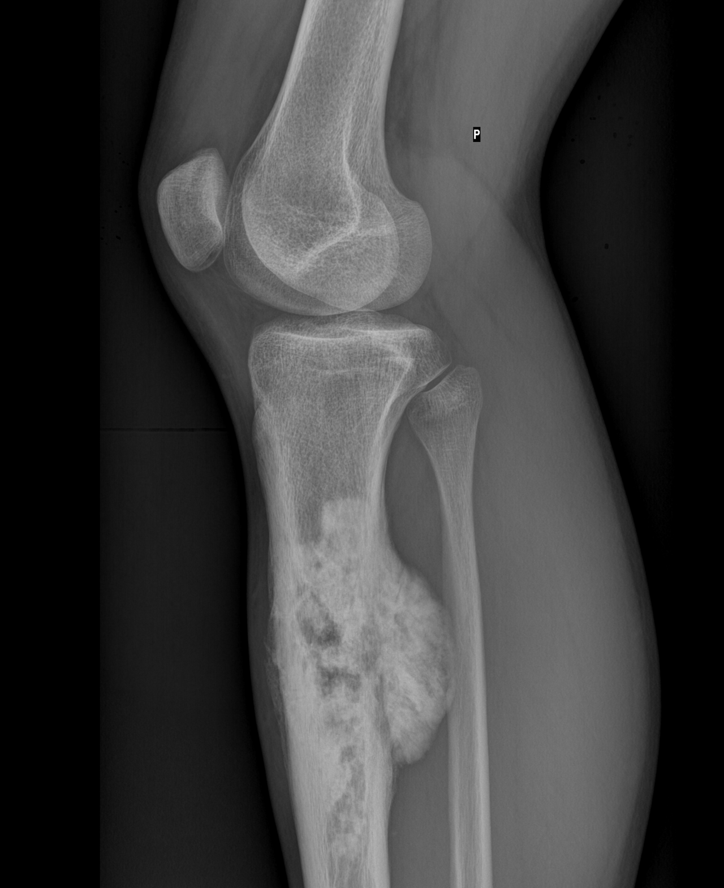

Ficha del catálogo
Osteosarcoma
- Sistema
- Óseo
- Modalidad
- RX
- Región
- Metáfisis de huesos largos
- Dificultad
- Avanzado
Tumor óseo maligno primario más frecuente en adolescentes y adultos jóvenes, con predilección por la metáfisis alrededor de la rodilla. Produce matriz osteoide, lo que le da su aspecto denso y desorganizado. Su diagnóstico se sospecha en la radiografía y se estadifica con resonancia y tomografía de tórax.
Técnica
Radiografía en dos proyecciones del hueso completo, seguida de resonancia de todo el segmento óseo para valorar la extensión medular y las lesiones salteadas.
Qué observar
- Lesión metafisaria con patrón lítico y blástico mixto y bordes mal definidos
- Matriz osteoide densa y amorfa dentro de la lesión y en las partes blandas
- Reacción perióstica agresiva, laminada o en rayos de sol
- Triángulo de Codman por despegamiento del periostio en el borde de la lesión
- Destrucción cortical con masa de partes blandas asociada
- Zona de transición amplia entre lesión y hueso normal
Hallazgos
Lesión ósea agresiva metafisaria con matriz osteoide, reacción perióstica agresiva, ruptura cortical y masa de partes blandas.
Perlas
La agresividad de una lesión ósea se juzga por la zona de transición y por el tipo de reacción perióstica, no por el tamaño. Una transición amplia con periostio interrumpido indica crecimiento rápido que el hueso no ha podido contener.
Diagnóstico diferencial
- Sarcoma de Ewing
- Suele ser diafisario, permeativo y con reacción en capas de cebolla.
- Osteomielitis
- Contexto febril, colecciones y secuestros más que matriz osteoide.
- Miositis osificante
- Calcificación periférica madura con centro lucente y antecedente traumático.
Simuladores
- Callo exuberante postraumático
- Osteomielitis crónica esclerosante
- Fractura por estrés con reacción perióstica
Por modalidad
- RX
- Sugiere el diagnóstico y orienta la agresividad
- TC
- Caracteriza la matriz y estudia metástasis pulmonares
- RM
- Define extensión medular, afectación articular y relación neurovascular
Protocolo
Radiografía en dos planos del hueso entero, resonancia con contraste incluyendo ambas articulaciones vecinas y tomografía de tórax para estadificación.
Clasificación
Se describe por localización, patrón de matriz y tipo de reacción perióstica, elementos que en conjunto definen el grado de agresividad radiológica.
Errores frecuentes
- Atribuir la lesión a traumatismo por el antecedente casual de un golpe
- No estudiar todo el hueso y omitir lesiones salteadas
- Realizar biopsia por una vía que comprometa la cirugía de rescate posterior

osteosarcoma tumor oseo codman rayos de sol metafisis matriz osteoide adolescente